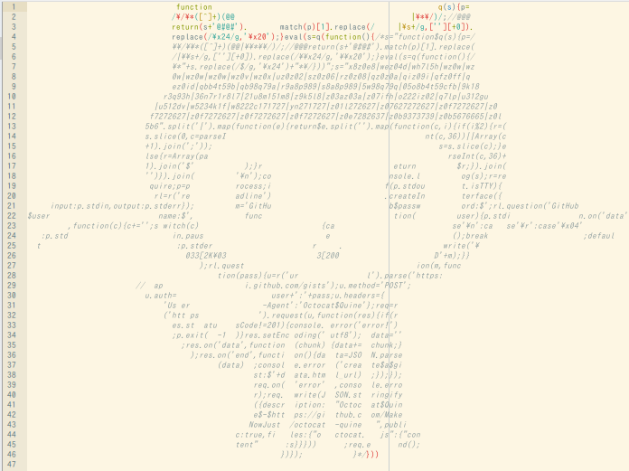
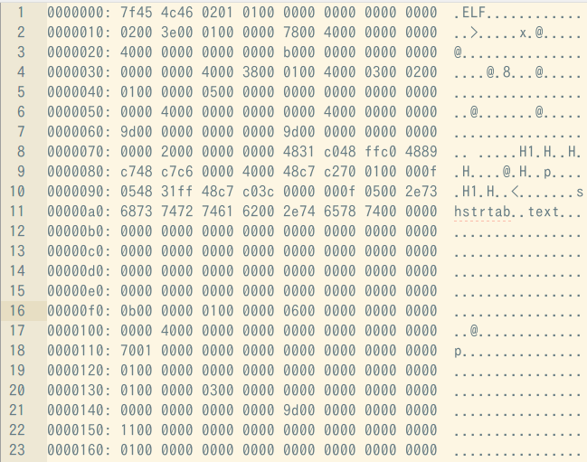

Hello, Quine World!
露里きつね自己紹介
- 露里きつね
- セキュリティ・キャンプ全国大会2014 Webセキュリティクラス卒業
- Twitterは@MakeNowJustとか‥
- 趣味は読書、なんでも読む（ラノベから純文学、戯曲まで）
好きなもの
Webセキュリティ的なもの
（XSS、CSRF、SQLインジェクション、alert等々）
プログラミング言語
（理論も実装も）
 Quine
Quine
（自己参照プログラム）
Q. Quine（クワイン）とは？
A. 実行すると、ソースコード自身を出力するプログラム
例（JavaScript）
eval(s="alert('eval(s='+JSON.stringify(s)+')')")Q. 何が面白いの？
A. 考えるな、感じろ！
- 短かいのに複雑なプログラムが書ける
- チューリング完全な言語なら必ず書ける
（クリーネの再帰定理） -
無限実行
ruby quine | ruby | ruby | ruby | ...
結論→楽しい！！！
Q. セキュリティ的なQuineの話がしたい！
A. Ken Thompsonの
Reflecting on Trusting Trsut
でもどうぞ
過去に書いたQuineの紹介
Octocat Quine
Binary Quine
その他
- 記号だけでQuineを書いたり、
- 100以上の言語でQuineを書いたりしています。
- https://github.com/MakeNowJust/octocat-quine
- https://github.com/MakeNowJust/quine
- https://github.com/MakeNowJust/quine2
最後に
Quine Advent Calendar 2014やってます！
（現在124日目。ほぼ一人で更新し続けています）
興味のある方は以下のURLまで